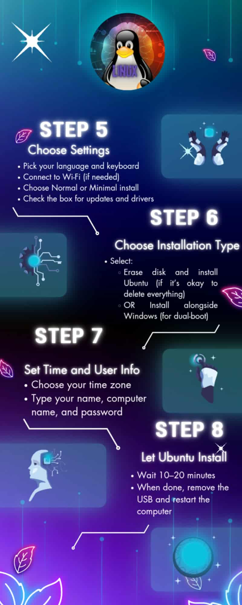

My Projects
Project One

Infographic on OS Installation Guide
Project Two
Exploring the lesson 2, Operating System Admin & Security on Windows UI/UX.
Project Three

Installing and Comparing an Operating System in VirtualBox
Project Four

IT Support Training and Simulation